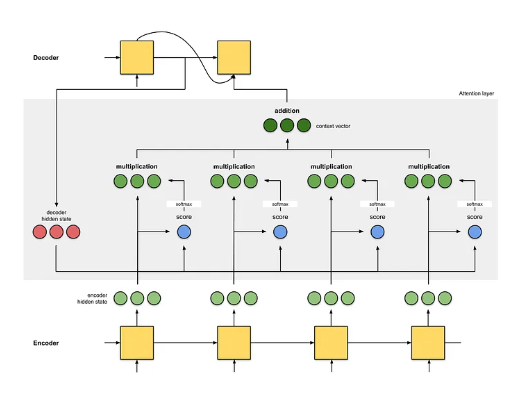

Attention 심층 분석 :
Seq2seq 모델의 한계부터 Transformer까지
1. Attention의 등장 배경 : Seq2seq 모델의 한계
기존의 RNN(Recurrent Neural Network) 기반 Seq2seq (Sequence-to-Sequence) 모델은 인코더(Encoder)가 입력 시퀀스 전체를 하나의 고정된 크기의 벡터, 즉 컨텍스트 벡터 (Context Vector)로 압축하는 구조를 가집니다.
디코더(Decoder)는 오직 이 컨텍스트 벡터에만 의존하여 출력 시퀀스를 생성해야 했습니다.
이러한 구조는 다음과 같은 명백한 한계를 가집니다.
- 정보 병목 현상 (Information Bottleneck) :
입력 시퀀스의 길이가 길어질수록,
모든 정보를 하나의 고정된 크기의 벡터에 압축하는 과정에서 정보 손실이 필연적으로 발생합니다.
특히 시퀀스 앞부분의 정보가 뒤로 갈수록 희석되는 문제가 있었습니다. - 고정된 표현의 한계 :
디코더는 매 타임스텝(단어 생성 시점)마다 동일한 컨텍스트 벡터를 참조해야 합니다.
이는 각 타임스텝에서 필요한 정보가 다름에도 불구하고, 문맥에 따른 동적인 정보 활용이 불가능함을 의미합니다.
2. Attention의 핵심 개념
어텐션(Attention) 메커니즘은 위와 같은 Seq2seq의 한계를 극복하기 위해 제안되었습니다.
핵심 아이디어는 디코더가 출력 단어를 예측하는 매 시점마다, 인코더의 전체 입력 시퀀스를 다시 한번 참고하되,
현재 예측에 가장 관련이 높은 특정 부분에 '집중(Attention)'하여 정보를 활용하는 것입니다.
이를 통해 고정된 컨텍스트 벡터가 아닌,
매번 새롭게 계산되는 동적 컨텍스트 벡터(Dynamic Context Vector)를 생성하여 정보 병목 현상을 해결합니다.
3. Attention 메커니즘 동작


4. Attention의 핵심 구성 요소 : Query, Key, Value
Query (Q)
현재 디코더의 (은닉)상태를 나타내는 벡터입니다. 출력 시퀀스의 특정 위치에서
"어떤 정보가 필요한가?"를 질의하는 역할을 합니다.
(주로 디코더의 은닉 상태 벡터 s_t가 사용됩니다.)
Key (K)
인코더의 모든 시점의 은닉 상태 벡터들로,
Query와 연관성을 계산하기 위한 '색인' 역할을 합니다. 각 Key는 특정 입력 단어의 정보를 담고 있습니다.
Value (V)
Key와 1:1로 매핑되는 벡터로, Key와 마찬가지로 인코더의 모든 시점의 은닉 상태 벡터들입니다. Key를 통해 연관성이 결정되면, 실제 디코더에 전달되는 '실질적인 내용'입니다.
심화 지식 : Key와 Value를 분리하는 이유
많은 경우 Key와 Value는 인코더의 동일한 은닉 상태 벡터를 사용합니다.
하지만 개념적으로 이 둘을 분리함으로써 유연성을 확보할 수 있습니다.
Key는 Query와의 유사도 계산이라는 특정 목적에,
Value는 정보의 가중합이라는 다른 목적에 사용될 수 있도록 설계된 것입니다.
이는 이후 Multi-Head Attention에서 더욱 중요해집니다.
5. Attention의 전체 작동 과정
"Thank you"를 "고마워"로 번역하는 과정을 통해 어텐션의 연산 흐름을 단계별로 살펴보겠습니다.
1 1단계: 인코더 - Key와 Value 준비
- 인코더는 입력 문장 "Thank", "you",
<eos>를 순서대로 입력받아
각 시점에서의 은닉 상태 벡터h_thank,h_you,h_eos를 계산합니다. - 기존 Seq2seq와 달리, 마지막 은닉 상태만 사용하는 것이 아니라 모든 시점의 은닉 상태 벡터들을 저장합니다.
- 이 은닉 상태 벡터의 집합이 Keys (K)이자 Values (V)가 됩니다.
2 2단계: 디코더 - 동적 컨텍스트 벡터 생성 및 단어 예측
디코더가 첫 번째 단어 "고마워"를 생성하는 과정입니다.
- Query 생성
: 첫 번째 단어를 예측하기 위한 디코더의 현재 은닉 상태s_0가 Query (Q)가 됩니다. - 어텐션 스코어(Attention Score) 계산
: Querys_0를 모든 Key 벡터들과 비교하여 유사도 점수를 계산합니다. - 어텐션 가중치(Attention Weights) 계산
: 계산된 스코어들에 소프트맥스(Softmax) 함수를 적용하여 합이 1인 확률 분포,
즉 어텐션 가중치(α)를 얻습니다. - 컨텍스트 벡터(Context Vector) 생성
: 계산된 어텐션 가중치를 각 Value 벡터에 곱한 후 모두 더합니다 (가중합, Weighted Sum).
이를 통해 현재 타임스텝만을 위한 맞춤형 컨텍스트 벡터c_0가 생성됩니다. - 최종 단어 생성
: 디코더는 이렇게 생성된 컨텍스트 벡터c_0와 자신의 은닉 상태s_0를 결합하여
최종적으로 "고마워"라는 단어를 예측합니다.
이후, 다음 단어(<eos>)를 예측할 때도 디코더의 다음 은닉 상태 s_1이 새로운 Query가 되어 위 2~5번 과정을 반복합니다.
이처럼 매번 Query에 따라 새로운 컨텍스트 벡터를 동적으로 계산하는 것이 어텐션의 핵심입니다.
6. 손실(Loss)과 학습 기법 : 교사 강요 (Teacher Forcing)
6-1. 손실 (Loss)
손실(Loss)은 모델의 예측값(prediction)과 실제 정답(ground truth) 사이의 불일치 정도를 정량화한 지표입니다. 기계 번역에서는 주로 크로스 엔트로피 손실(Cross-Entropy Loss)이 사용됩니다. 모델은 예측된 단어의 확률 분포와 실제 정답 단어(one-hot vector) 간의 차이를 계산하고, 이 손실 값을 최소화하는 방향으로 내부 파라미터(가중치)를 업데이트하며 학습을 진행합니다.
6-2. 교사 강요 (Teacher Forcing)
교사 강요(Teacher Forcing)는 Seq2seq 모델의 효율적인 훈련을 위한 기법입니다.
디코더가 다음 단어를 예측할 때, 이전 타임스텝에서 모델 자신이 예측한 단어를 입력으로 사용하는 대신,
실제 정답 단어(ground truth)를 입력으로 사용합니다.
- 목적 :
훈련 초기에 모델이 잘못된 단어를 예측했을 경우, 그 오류가 다음 예측에 연쇄적으로 영향을 미치는 오류 전파(Error Propagation) 문제를 방지하기 위함입니다. - 효과 :
실제 정답을 입력으로 제공함으로써, 모델은 각 타임스텝에서 독립적으로 올바른 문맥을 학습할 수 있습니다. 이는 학습 속도를 높이고 훈련 과정을 안정화하는 데 크게 기여합니다.
7. Attention의 종류와 발전
| 구분 | 바다나우/루옹 어텐션 (Cross-Attention) | 셀프 어텐션 (Self-Attention) |
|---|---|---|
| 목적 | 입력-출력 시퀀스 간의 연관성 파악 (e.g., 번역) |
단일 시퀀스 내 단어 간의 문맥적/구문적 관계 파악 |
| 참조 대상 | 디코더 ↔ 인코더 (서로 다른 두 시퀀스) | 입력 시퀀스 ↔ 자기 자신 (동일한 하나의 시퀀스) |
| Q, K, V 출처 | Q : 디코더의 은닉 상태 K, V: 인코더의 모든 은닉 상태 |
Q, K, V : 모두 동일한 입력 시퀀스로부터 생성 |
| 주요 사용 모델 | RNN 기반 Seq2seq 모델 | 트랜스포머 (Transformer) 계열 모델 (BERT, GPT 등) |
- Bahdanau Attention (Additive)
: 스코어 계산에 작은 신경망을 사용하는 덧셈(additive) 방식
디코더의 이전 은닉 상태(st-1)를 Query로 사용합니다. - Luong Attention (Multiplicative)
: 스코어 계산에 내적(dot-product) 등 곱셈(multiplicative) 방식을 사용
디코더의 현재 은닉 상태(st)를 Query로 사용하여 더 간단하고 효율적입니다. - Self-Attention
: 트랜스포머(Transformer) 아키텍처의 핵심 구성 요소
하나의 문장 내에서 단어들끼리 서로 Q, K, V 역할을 수행하여 "그 동물은 피곤해서 길을 건너지 않았다.
왜냐하면 그것은 지쳤기 때문이다."와 같은 문장에서 '그것'이 '동물'을 지칭함을 파악하는 등
문장 내부의 의존 관계(dependency)를 학습합니다.
8. Transformer : Attention is All You Need
트랜스포머(Transformer)는 RNN의 순차적 연산 구조를 완전히 배제하고,
오직 셀프 어텐션만으로 인코더와 디코더를 구성한 혁신적인 모델입니다.
- 핵심 변화
: RNN의 재귀적인(recurrent) 구조가 사라짐으로써
문장의 모든 단어를 한 번에 병렬적으로 처리할 수 있게 되었습니다. - 장점
: 병렬 연산을 통해 학습 속도가 비약적으로 향상되었고, GPU 활용을 극대화할 수 있게 되었습니다. 또한, 셀프 어텐션을 통해 문장 내의 장거리 의존 관계(long-range dependency)를 RNN보다 효과적으로 포착할 수 있습니다. - 영향
: 트랜스포머의 등장은 현대 자연어 처리(NLP) 분야의 패러다임을 바꾸었으며,
BERT, GPT 등 대부분의 SOTA(State-of-the-art) 모델의 기반이 되었습니다.